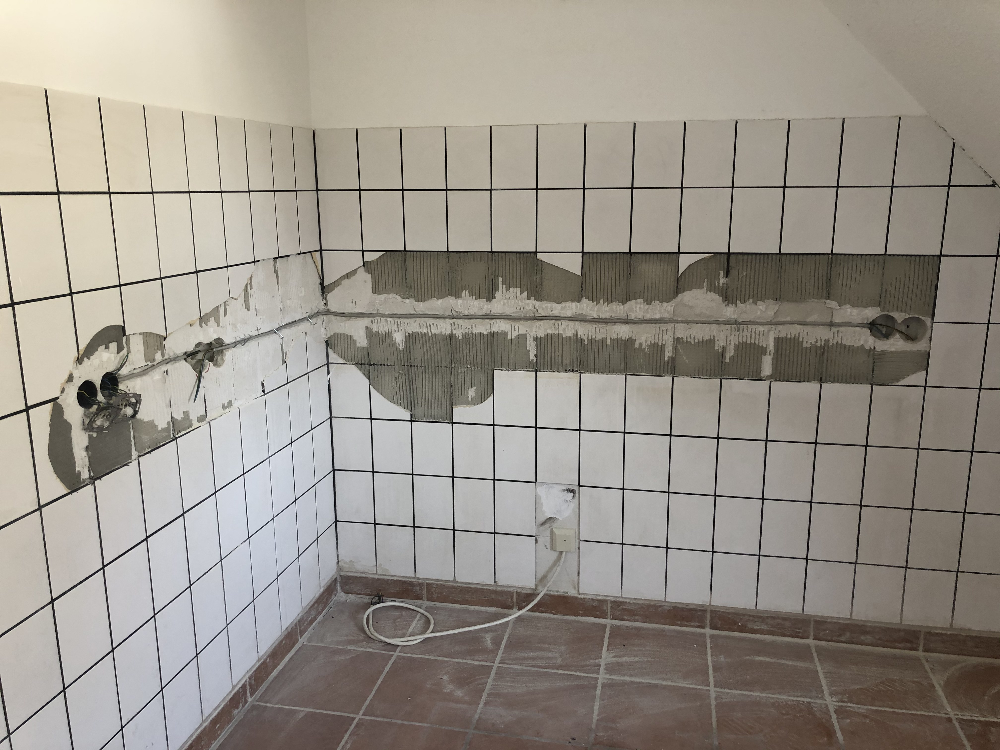
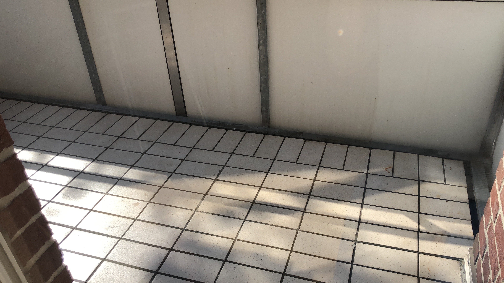
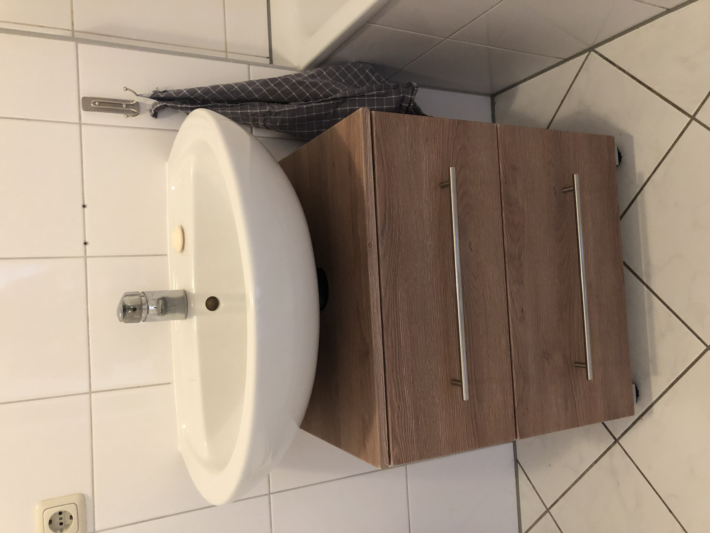
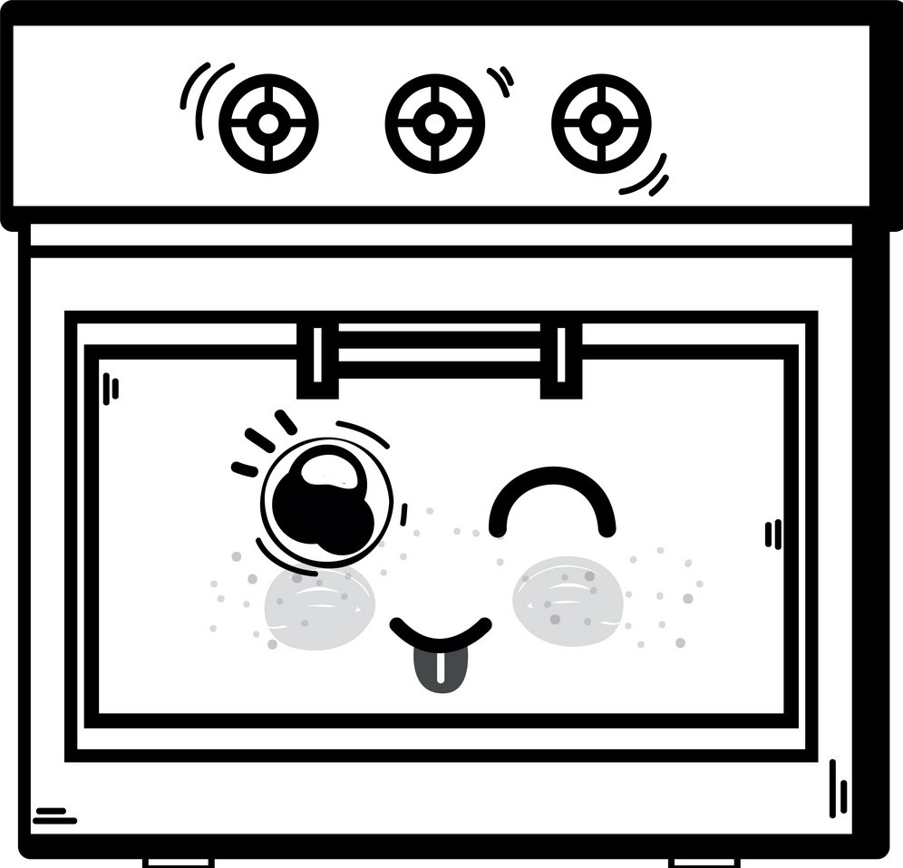
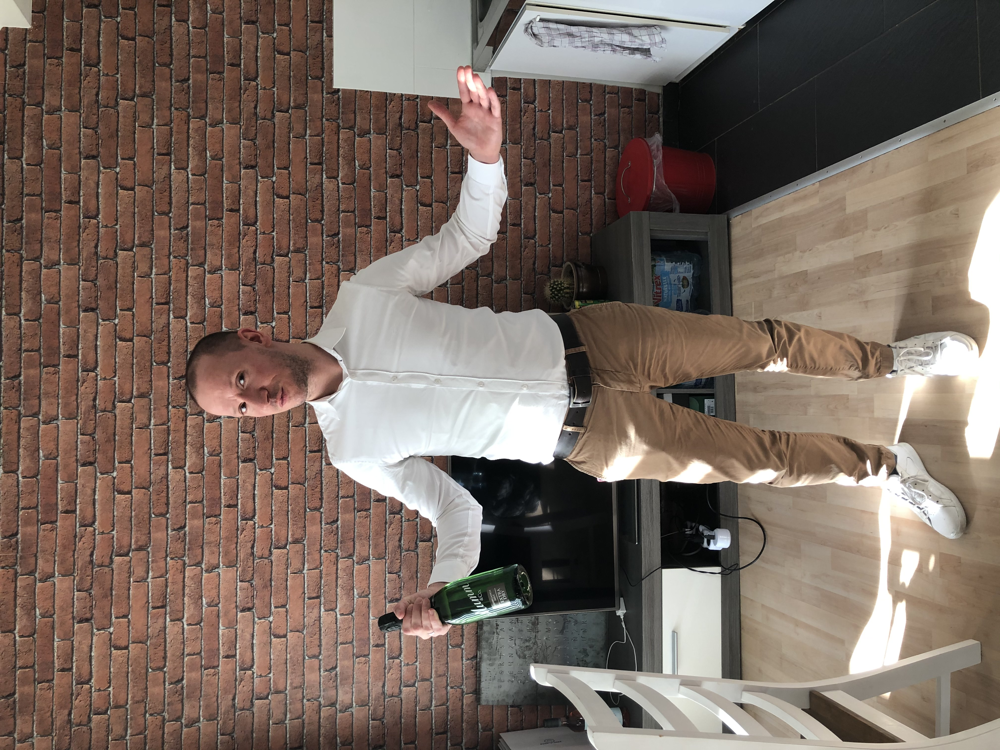
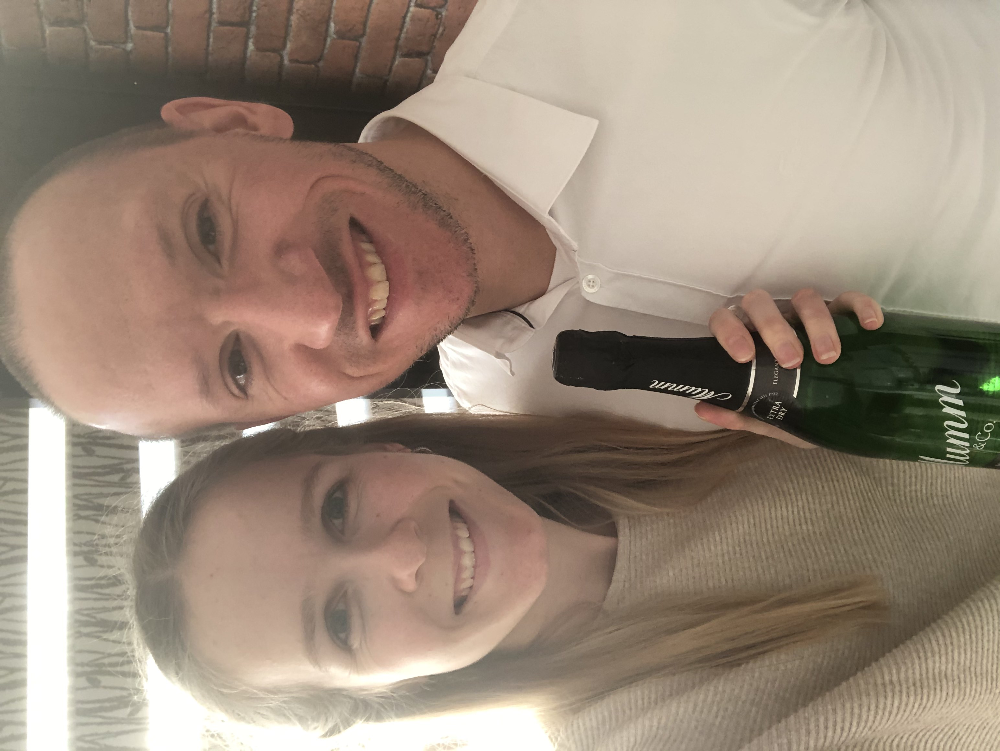

No Advertising Space
03.05.2021
Trotz der vielen Clicks und des dadurch aufgebauten wirtschaftlichen Drucks möchten wir das wichtigste vorwegnehmen:
Dieser Blog bleibt werbefrei!
Davon abgesehen, tut sich einiges. Engelberts haben Urlaub und Zeit, den Elektriker zu empfangen. Der zeigt sich ausgesprochen dankbar und macht uns erstmal die Küche kaputt.
Der Elektriker macht so allerhand, wir schauen zu und staunen. Viele schwere Maschinen, aber auch Hammer und Meißel kommen zum Einsatz, zwischendurch geschicktes Gekabel. In der Theorie kann Frederich viel lernen, in der Praxis bleiben ihm aber - zumindest heute - nur Aufräumarbeiten. Aber auch das macht ausnahmsweise Spaß - immerhin geht es voran.
In den Pausen finden wir Zeit, um ein wenig an Accessoires im Bad und auf dem Balkon zu basteln, aber seht selbst:
 Und dann gibt es noch das Malheur mit der Badezimmertür, aber davon erzählen wir lieber nichts. Das ist das coole an Selbstdarstellung im Internet. Schöne heile Welt.
Eure Angelbirds
Viel zu tun.
25.04.2021
Hallo Fans!
Gerade nicht viel los hier im blog, da wir schon kräftig heftig bei Arbeit sind. Das meiste davon sind vorbereitende Arbeiten, die nicht so viel Spaß machen, die aber passieren müssen bevor die Menschen kommen, die das mit dem Handwerk so richtig gut können.
Aber auch wir konnten mit etwas Putzaufwand schon einige Vorher/Nacher-Effekte erzielen siehe z.B.:
Damit es euch nicht langweilig wird, gibt es dazu noch viele weitere Bilder in der Gallerie.
Demnächst gibt es auch wieder mehr Text, versprochen! Bis dann.
Antonia & Frederich
Die Geschichte von den drei Öfen
10.04.2021

„Frederik, wir können nicht 1 Jahr ohne Ofen leben!“ Ja richtig, in unserer 34 qm Wohnung haben wir keinen Ofen, geschweige denn eine vernünftige Küche. Naja, positiv daran ist, dass meine Ansprüche an einer Küche dadurch vielleicht etwas gesunken sind und ich mich über jede neue Küche freue. Oder auch nicht? Als Entschädigung für diese Überbrückungszeit habe ich von Frederik mindestens 3 Öfen verlangt.
Auswahl der Küche
Als Frederik und ich unsere Mäusehöhle gefunden haben wussten wir bereits: Die Küche wird ein großes Projekt.
Denn es gibt keine Einbauküche in der Wohnung und selbst die Wände und der Boden waren nicht nach unseren Vorstellungen.
Wir waren uns schnell einig, dass ich diese große Aufgabe übernehmen werde.
So schnell wie möglich wollten wir voran kommen, da wir schon wussten wie die Lieferzeiten einer Küche aussehen. Also los, Berta hat mit allen möglichen Leuten gesprochen, die schon einmal eine Küche gekauft haben. Aber auch das hat nicht gereicht. Auch im Internet haben mich meine Recherchen auf einen YouTube Kanal geführt.
Gutsmann Küchen in Bautzen, Mensch, vielen Dank für die vielen schlechten aber trotzdem sehr aufschlussreichen Videos.
Kurzfristig war ich dann bei Dassbach Küchen in Krefeld. Soweit so gut, der Termin war sehr angenehm. Nur leider kam danach nichts mehr, sodass ich ein neues Küchenhaus aufsuchen musste. Über einen Arbeitskollegen kam ich dann an seine Stieftochter „Josi“ und somit an die Küchenmacher in Frechen.
Wir waren sehr schnell auf einer Wellenlänge und haben alles besprochen. Vorher habe ich mit natürlich bereits über einige Punkte Gedanken gemacht. Was ist mir wichtig in der Küche?
Vor allem Funktionalität.
High Tech Geräte gehen schnell kaputt und früher oder später mir auch auf den Geist. Die Fronten und Arbeitsfläche sollten nicht so empfindlich sein gegen Flecken. Viele Auszüge und einfach so viel Stauraum wie es geht.
Josi hat mir dann einige Sachen in der Ausstellung gezeigt und für mich sah alles riesig aus. Der „kleine“ Kühlschrank war doppelt so groß wie der, den wir jetzt aktuell verwenden. Natürlich habe ich mich dennoch für den „großen“ Kühlschrank entschieden.
Man kann in der Küche nicht genug Platz haben. Das ist Fakt.
Bei den Öfen habe ich allerdings Abstriche gemacht. Es wurde dann doch nur einer. Natürlich nur aus Platzgründen.
Insgesamt fünf Stunden aufgeteilt auf zwei Termine Frechen verbracht, ganz zu Schweigen von der Vorbereitung. Wie soll die Küche aussehen? Welcher Boden? Wie wird alles angeordnet?
Frederich musste dem natürlich viel stand halten und viele Fragen beantworten. Ganz oft kam die Frage „was findest du schöner?“. Und ich muss zugeben, am Ende hat meine Meinung eben doch mehr Einfluss gehabt als seine.
Auch Andrea musste mich in einer Notsituation unterstützen. Zwischen dem ersten und zweiten Termin, erlitt ich nahezu einen Nervenzusammenbruch. Ich wusste auf einmal gar nicht mehr was ich wollte.
Sie hat es aber geschafft, mich wieder auf den Boden zurück zu holen. „Bleib einfach bei dem, was du von Anfang an schön fandest.“ Und das war auch richtig so.
Als die Küche fertig geplant war, war ich zu 100% zufrieden (und bin es noch). Nun der spannendste Teil: Was ist letzte Preis? Den habe ich dann doch sehr ausgereizt... Dennoch wollte ich nichts mehr an der Küche ändern. Voller Freude und mit einer Pulle Sekt vom Küchenmacher fuhr ich nach Hause um Frederik dann endlich das Endergebnis vorzustellen. Die Begeisterung wie ich sie erwartete (vielleicht weil ich selbst einfach sehr begeistert war), hielt sich dann doch in Grenzen. Eine dunkle Küche wäre schöner gewesen...
Nach einer kleinen, darauffolgenden, „Auseinandersetzung“ (Faustkampf - Anm. der Redaktion) war aber alles wieder gut. Frederichs Autismus hat sich auf die Salbei-Küche eingestellt.
Dafür hat er am Ende dann auch mit seiner ersten Wahl des Küchenbodens überzeugt und konnte so doch auch einen großen Teil bei der Optik der Küche entscheiden. Was wäre auch eine schöne Küche mit einem nicht so schönen Boden?
Das vorläufige Endergebnis seht ihr in den Fotos. Sobald die Küche dann wirklich da ist (voraussichtlich Mitte Juni), können wir endlich richtige Fotos machen.
Und noch viel besser und auch wichtiger: Endlich gibt es wieder Tiefkühlpizza!!!
Eure Antonia.
Den Friedrich Wilhelm setzen.
29.03.2021

Oh man, wir waren beim Notar. D.h. es wird nun ernst. Die Engelberts kaufen sich ins Mäuseglück. Sowas macht man heute (und gestern und vermutlich auch morgen) bei einem Notar. Dort unterschreibt man dann, während man einen Anzug trägt. Ganz wie Erwachsene. Aber was ist ein Notar eigentlich und warum heißt per Unterschrift zu unterzeichen sprichwörtlich "seinen Friedrich Wilhelm" zu setzen?
Dr. L
Der Notar (von lateinisch notārius ‚Geschwindschreiber‘) ist eine Person, die Beglaubigungen und Beurkundungen von Rechtsgeschäften, Tatsachen, Beweisen und Unterschriften vornimmt. Er ist auch für die Hinterlegung von Geld und Kostbarkeiten zuständig. (lt. Wikipedia)
Es geht also um die notarielle Beurkundung des Kaufs unserer zukünftigen Wohnung. Klingt schon ziemlich deutsch, ist für uns aber immernoch aufregend. Wir sind ja auch irgendwie deutsch - logisch und biologisch. Eine echte Vorstellung von einem solchen Notarbüro habe ich jedenfalls nicht. Es gibt zwar Kindheitserinnerungen, aber die liegen weit zurück.
Bei Herrn Dr. L ist es dann so ganz anders, als ich es mir vorgestellt hatte. Der kann zwar wie erwartet sehr schnell sprechen bzw vorlesen, hält aber immer wieder inne, um alles zu erklären oder sogar mal einen mittelguten bis guten Witz zu machen. Zwischendurch wird sich noch über ungerechtfertigte Google Bewertung echauffiert, der Makler stimmt gerne mit ein.
Man hört ihm gerne zu.
Nach etwas mehr als einer Stunde kommt es dann zur erwarteten Unterschrift beider Seiten - ich nehme sogar die Unterschrift für gut, nicht die krackelige fürs wenns mal wieder schnell gehen muss. Hach, ein schöner Termin, obwohl (vielleicht aber auch weil) er so förmlich ist. Spektakulär!
Friedrich Wilhelm unter etwas setzen
Spektakulär ist auch die Tatsache, dass der preußische König Friedrich Wilhelm I. (1713 - 1740) jeden Schrieb mit vollem Namen unterzeichnete, was die Leute so beeindruckt, dass ihm noch heute mit dem besagten Sprichwort gehuldigt wird. Guter Typ!
Jedenfalls... Ja, wir haben es getan. Wir haben den Friedrich Wilhelm (regional im Übrigen auch Karl-Otto) gesetzt. Jetzt kann es los gehen. Wuhu. Abends gabs dann nen Sektchen, weil man das wohl so macht. An so einem Tag schmeckt er mir sogar beinahe.
Wir hoffen das Lesen hat ein wenig unterhalten, wir hatten zumindest beim Schreiben ein wenig Spaß. Bis zum nächsten mal!